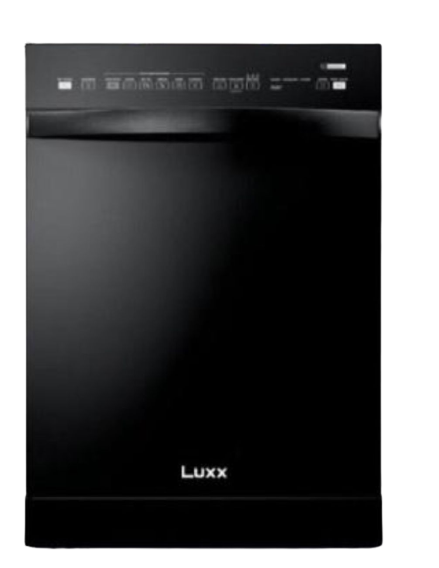
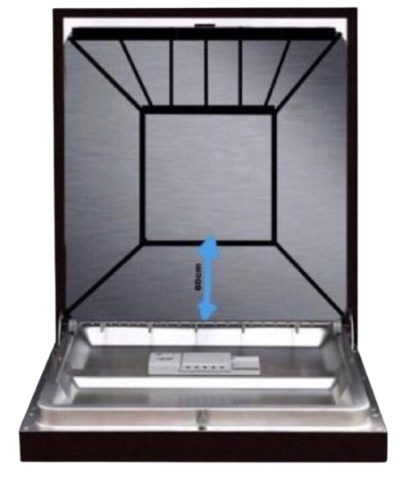

PASS AND DRY
Pass and dry da Luxx é uma máquina que tem a função de secar e passar a roupa na qual uma fumaça soltada pelas laterais da máquina faz com que a roupa seje seca e passada em menos de 15 minutos, ela é composta por um varal de 60cm que pode couber 5 peças ou
mais(dependendo do tamanho)

Pass and dry está por R$3.000,00
com garantia de 5
meses

Pagamento à vista
ela sai por
R$2.700,00